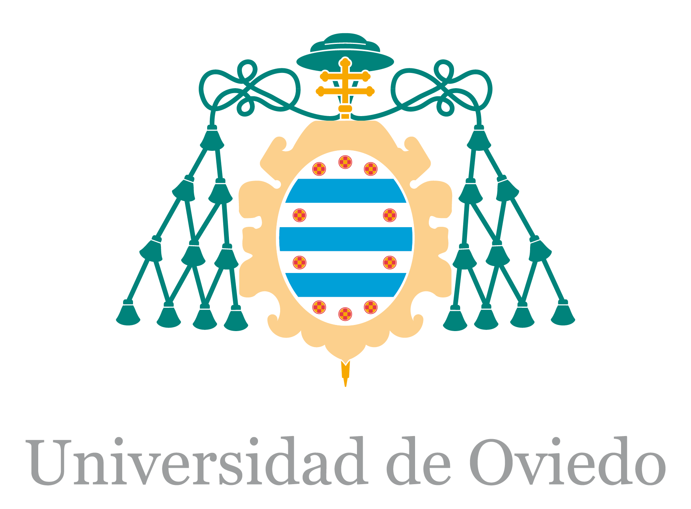
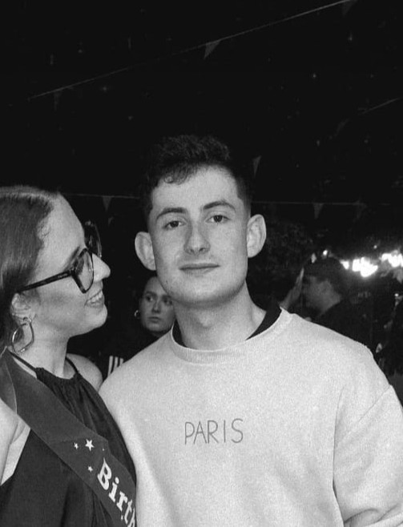
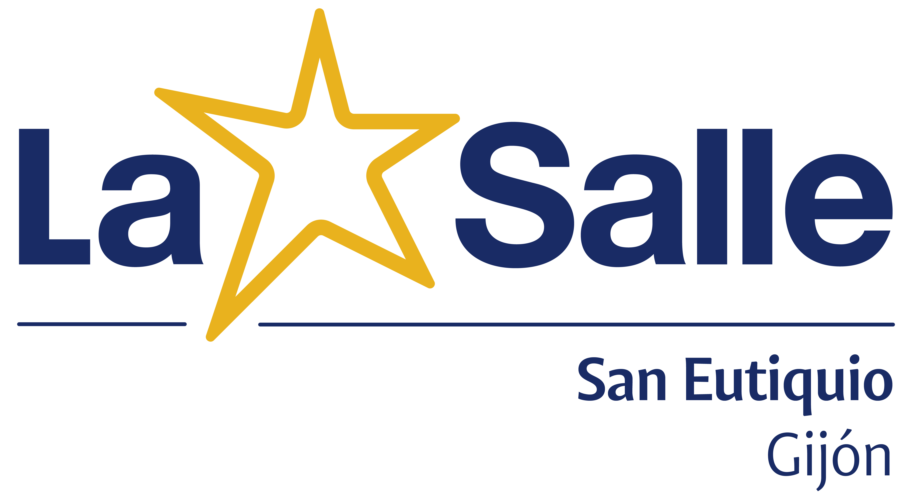
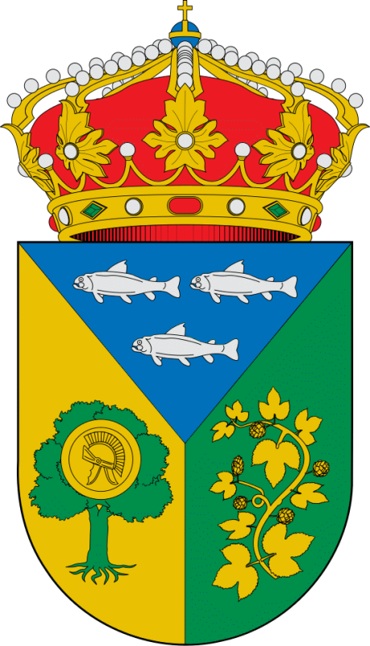
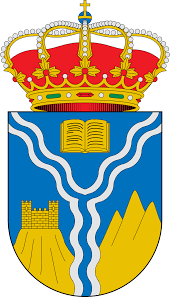

Máster Universitario en Ingeniería Web
Universidad de Oviedo | Promoción 2026/2027
Estudios en curso.
Información académica, trayectoria profesional y competencias técnicas en el ámbito del software y la ingeniería web.

Graduado en Ingeniería Informática del Software | Estudiante del Máster Universitario en Ingeniería Web
Soy graduado en Ingeniería Informática del Software por la Universidad de Oviedo y estudiante del Máster Universitario en Ingeniería Web en la misma institución. Me defino como un profesional proactivo, con un sólido compromiso con el software que creo y de los sistemas en los que intervengo.

Universidad de Oviedo | Promoción 2026/2027
Estudios en curso.
Universidad de Oviedo — Escuela de Ingeniería Informática (EII) | Promoción 2022-2026
Formación integral en Ingeniería Informática del Software. Trabajo de Fin de Grado (TFG): Aplicación Android de Carburo. Evaluación: 10 + propuesta para matrícula.

C.E.S. San Eutiquio La Salle | Promoción 2020-2022
Inicio: Septiembre de 2026 - Actualidad | Ubicación: Parque Tecnológico de Asturias, Llanera
Área de desarrollo del producto interno de la empresa. Labores de desarrollo de software para la gestión de multiples sistemas e infraestructuras.
Inicio: Febrero de 2026 | Ubicación: Parque Tecnológico de Asturias, Llanera
Prácticas de empresa. Departamento del producto interno de la empresa. Desarrollo de software, sistemas e infraestructuras tecnológicas corporativas.

Fecha: Agosto de 2026 | Ubicación: Llamas de la Ribera, León
Hostelería. Atención al público.

Fecha: Agosto de 2023 | Ubicación: Las Omañas, León
Hostelería. Atención al público.
Área técnica: Montaje, mantenimiento y diagnosis de sistemas eléctricos
Amplia experiencia práctica en instalación y mantenimiento de redes e instalaciones eléctricas de baja tensión.
Resumen de mi currículum vitae en HTML semántico.
Graduado en Ingeniería Informática del Software | Estudiante del Máster Universitario en Ingeniería Web